Plugin Use
This section will walk you through using adb to install a plugin into the camera. You will put the camera into Plugin Mode and test the SDK sample Plugin. You will set the active Plugin using the RICOH THETA mobile app, and you will show a list of all the Plugins installing in the camera using the API.
adb
Connect the THETA V to your developer workstation with a USB cable.
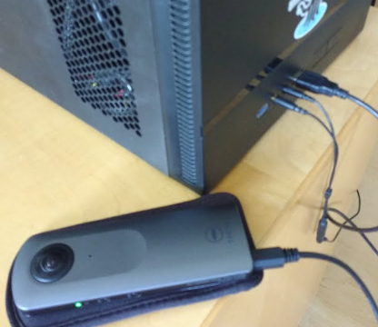
Use adb to connect to the camera
On Windows, adb is installed into
C:\Users\[user]\AppData\Local\Android\sdk\platform-tools
On the Mac, adb is installed into
/Users/[user]/Library/Android/sdk/platform-tools
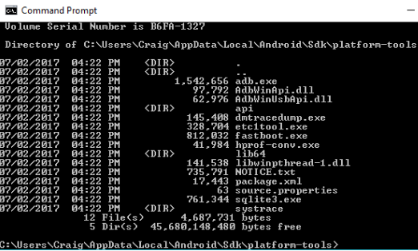
You should add this into your PATH. On Windows, you can edit the PATH with Control Panel -> System and Security -> System -> Advanced system settings -> Environment Variables -> Path
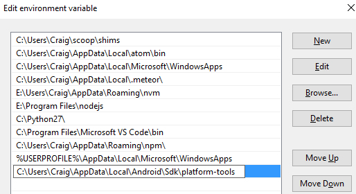
After putting adb into your PATH, start a new cmd shell and run
adb devices -l
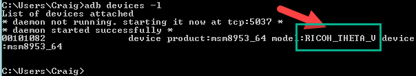
If you don't use -l, you can still identify the device by the serial number
of your THETA V. In the example below, my THETA V has a serial number of 00101082.
$ adb devices
List of devices attached
* daemon not running. starting it now at tcp:5037 *
* daemon started successfully *
00101082 device
Log into the camera using adb shell
Do an ls to list all files. The directory structure and overall environment is the same as a standard Android phone.
$ adb shell
msm8953_64:/ $ ls -l
total 4240
drwxrwxr-x 5 media_rw media_rw 4096 2017-01-01 00:00 DCIM
dr-xr-xr-x 17 root root 0 1970-04-02 10:08 acct
drwxr-xr-x 2 root root 40 1970-01-01 00:00 bt_firmware
lrwxrwxrwx 1 root root 50 1970-01-01 00:00 bugreports -> /data/user_de/0/com.android.shell/files/bugreports
drwxrwx--- 6 system cache 4096 2017-11-14 15:55 cache
lrwxrwxrwx 1 root root 13 1970-01-01 00:00 charger -> /sbin/healthd
drwxr-xr-x 2 root root 0 1970-04-02 10:08 config
lrwxrwxrwx 1 root root 17 1970-01-01 00:00 d -> /sys/kernel/debug
drwxrwx--x 43 system system 4096 2017-09-21 14:00 data
-rw-r--r-- 1 root root 966 1970-01-01 00:00 default.prop
drwxr-xr-x 15 root root 3180 2017-11-27 12:50 dev
drwxr-xr-x 3 root root 4096 1970-01-01 00:00 dsp
Change directory into DCIM/0
The RICOH THETA Plug-in SDK uses the android.hardware.Camera class. It saves images into the normal location you would expect from an Android device. You can also use the RICOH THETA API v2.1, which is is a WebAPI based on OSC to take pictures from your plug-in by sending a POST command to the internal camera web server.
127|msm8953_64:/DCIM/0 $ ls -l
total 128
drwxrwxr-x 2 media_rw media_rw 4096 2017-01-01 00:00 Alarms
drwxrwxr-x 2 media_rw media_rw 4096 2017-09-22 22:31 Converted
drwxrwxr-x 3 media_rw media_rw 4096 2017-09-19 18:15 DCIM
drwxrwxr-x 2 media_rw media_rw 4096 2017-01-01 00:00 Download
drwxrwxr-x 2 media_rw media_rw 4096 2017-01-01 00:00 Movies
drwxrwxr-x 2 media_rw media_rw 4096 2017-10-02 15:31 MtpOperation
drwxrwxr-x 2 media_rw media_rw 4096 2017-01-01 00:00 Music
drwxrwxr-x 2 media_rw media_rw 4096 2017-01-01 00:00 Notifications
drwxrwxr-x 2 media_rw media_rw 4096 2017-01-01 00:00 Pictures
drwxrwxr-x 2 media_rw media_rw 4096 2017-01-01 00:00 Podcasts
drwxrwxr-x 2 media_rw media_rw 4096 2017-01-01 00:00 Ringtones
-rw-rw-r-- 1 media_rw media_rw 15972 2017-09-25 23:35 btsnoop_hci.log
drwxrwxr-x 2 media_rw media_rw 4096 2017-09-21 14:26 ptp
Locate Pictures and Movies. These are standard Android directories. The THETA V stores images in /DCIM/0/DCIM/100RICOH
msm8953_64:/DCIM/0/DCIM/100RICOH $
msm8953_64:/DCIM/0/DCIM/100RICOH $ ls -l
total 554752
-rw-rw-r-- 1 media_rw media_rw 1970120 2017-09-28 12:58 R0010025.JPG
-rw-rw-r-- 1 media_rw media_rw 2402374 2017-09-28 12:58 R0010026.JPG
-rw-rw-r-- 1 media_rw media_rw 2136165 2017-09-28 12:58 R0010027.JPG
-rw-rw-r-- 1 media_rw media_rw 2810985 2017-09-28 12:59 R0010028.JPG
-rw-rw-r-- 1 media_rw media_rw 1834346 2017-10-18 18:34 R0010035.JPG
-rw-rw-r-- 1 media_rw media_rw 679681 2017-10-21 12:13 R0010036.JPG
-rw-rw-r-- 1 media_rw media_rw 2103925 2017-10-21 14:16 R0010037.JPG
-rw-rw-r-- 1 media_rw media_rw 52108839 2017-10-21 14:19 R0010038.MP4
-rw-rw-r-- 1 media_rw media_rw 108450224 2017-10-21 14:20 R0010039.MP4
Install Plugin into Camera
Call adb install -r ./theta-plugin-sdk-master/app/build/outputs/apk/debug/app-debug.apk
$ adb install -r ./theta-plugin-sdk-master/app/build/outputs/apk/debug/app-debug.apk
* daemon not running. starting it now at tcp:5037 *
* daemon started successfully *
Success
Put Camera into Plugin Mode
Plugin mode can only be enabled on the RICOH THETA V.
Plugins will not work on older THETA models m15, S, or SC.
Every THETA V can be put into plugin mode by first turning the THETA V on and then pressing the mode button.
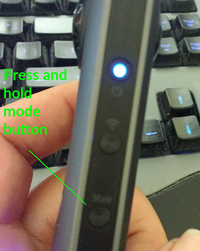
After pressing the mode button for 2 seconds, release it.
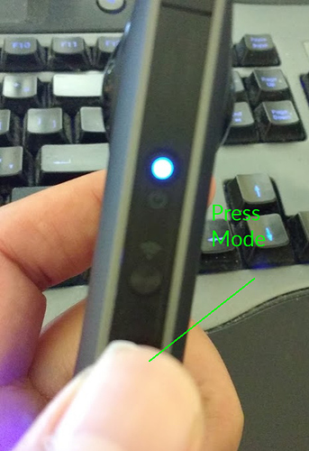
The Camera Status lamp will turn solid white.
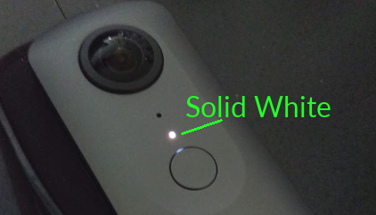
Additional information on the side buttons is shown below.
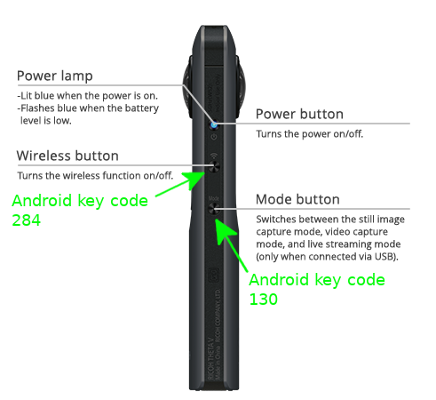
Information on the front of the camera is shown below.

Test SDK Sample Plugin
Press the physical button on the camera. There will be a shutter sound. The image should be captured.
The picture will be given a filename that is in numerical sequential order incrementing up from the previous picture. The format will be similar to this example filename: R0010047.JPG.
The plug-in will save the image to a file with the location and format similar to the example below.
/sdcard/DCIM/100RICOH/R0010047.JPG
Get the file name by using adb shell described in the step above.
Use adb pull to get the image file file to your local computer.
Example:
adb pull /sdcard/DCIM/100RICOH/R0010047.JPG
Alternate techniques to get the file and filename.
- Use MTP as you would with a normal Android phone
- Use a tool like Vysor to display a virtual THETA V screen to your workstation. To set up and use Vysor, refer to the next section on Vysor.
Set Active Plugin with Mobile App
Using the Ricoh mobile app, you can see and select the active plugin.
Connect your RICOH THETA mobile app to your THETA V.
Go to Settings.
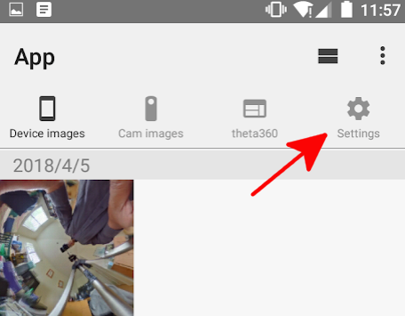
On the Settings screen of your mobile app, click on Camera settings.
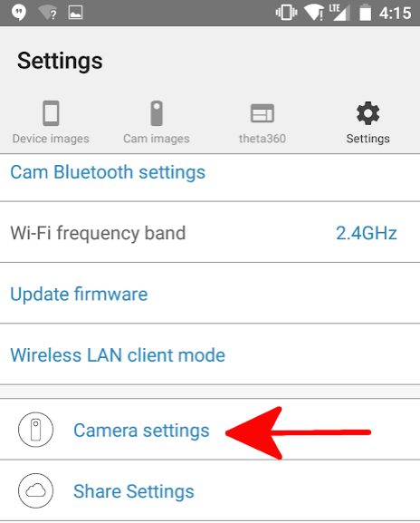
On your Camera settings screen you will be able to see your Plug-in. On the screen at the top of this section, my plug-in is called PluginSample.
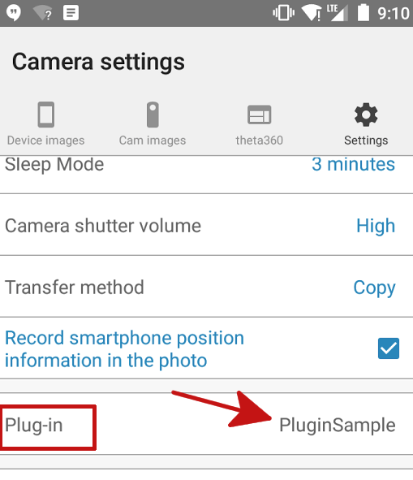
Click on the active plug-in name to display a choice of available plug-ins.
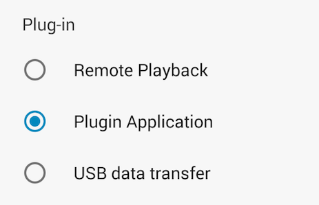
This process is current as of version 1.17.1 of the Android application.
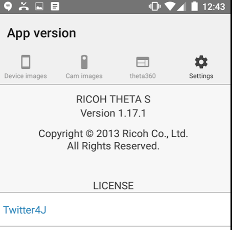
This concludes the Plugin Use section. Congratulations!